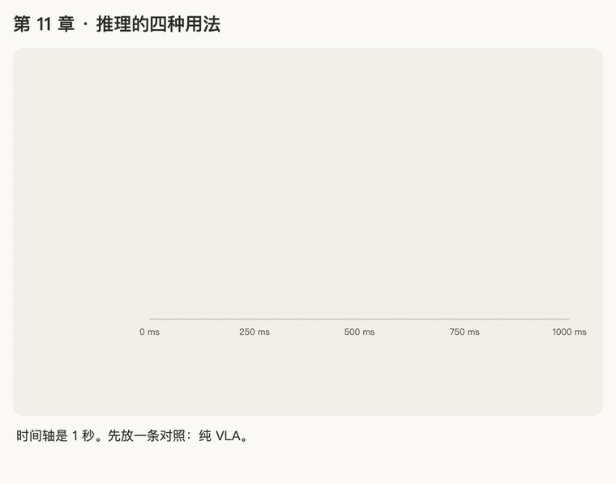

第 11 章 · 推理的四种用法：离线想象、在线规划、直接出动作、交互模拟
本章回答：世界模型训好以后，部署时怎么用？四种用法各自要跑世界模型几次、多快？为什么"怎么用"比"怎么训"更能区分流派？
讲解日期：2026-11-20 · 上一章：第 10 章 世界模型五派 · 下一章：第 12 章 2026 年的 WAM 版图
对应原文：调研报告 §6 推理过程的四种模式；CIS 6280 第 2 讲 Slide 72 最后一句（materials/text/lecture-02-interactive-deck.md第 964 行）
本章缩写：MPC = Model Predictive Control（模型 / 预测 / 控制）；MCTS = Monte Carlo Tree Search（蒙特卡洛 / 树 / 搜索）；CEM = Cross-Entropy Method（交叉熵 / 方法）；fps = frames per second（每秒帧数）；Hz = Hertz（赫兹）；RTC = Real-Time Chunking（实时 / 分块）。全部缩写见 附录 · 缩写与术语表
讲解
第一步：会预测，还要会"用"（2026-11-20）
第 2 讲 Slide 72 的最后一句："Joint behavior modeling does not by itself choose the best action."（联合建模本身不会挑出最好的动作。）世界模型知道"做了会怎样"，但要变成机器人的行动，还得决定怎么用它。
类比：一本很准的天气预报，四种用法。
- 提前用它排好一整季的训练计划，到时照计划走（A 离线想象）；
- 每次出门前都查一遍，比较几条路线挑最好的（B 在线规划）；
- 把"判断天气"和"决定穿什么"合成一个习惯，看一眼就穿好（C 直接出动作）；
- 做成一个天气模拟游戏，让人自己调参数玩（D 交互模拟）。
一句话：同一个模型，用法不同，速度差几个数量级。
第二步：A 离线想象 和 B 在线规划（2026-11-20）
A 离线想象，部署只跑策略：
- 世界模型在训练时生成想象轨迹，用来训练策略或造数据；
- 部署时世界模型不跑，只跑策略，一次前向；
- 代表：Dreamer（第 10 章 W1）、DreamGen（视频模型造数据给 GR00T N1）、在世界模型里评测策略；
- 速度：和普通策略一样快。
B 在线规划（MPC / 搜索）：
- 每一步都在模型里展开很多候选未来，打分，挑最好的动作，执行第一步后重来；
- 开销 = 候选数 × horizon（往前看几步）× 一次前向；
- 代表：MuZero（MCTS）、TD-MPC2、V-JEPA 2-AC（CEM）、DINO-WM；
- 速度：V-JEPA 2-AC 每个动作约 16 s，用视频模型规划约 4 分钟 （二手）。
例子（编的数）：CEM 每轮采样 100 条动作序列，每条往前看 10 步，迭代 5 轮，就是 \(100\times10\times5=5000\) 次世界模型前向，才换来一个动作。
一句话：A 把世界模型的开销挪到训练时；B 把它放在每一步里，所以慢。
第三步：C 直接出动作 和 D 交互模拟（2026-11-20）
C 直接出动作（WAM policy）：
- 世界模型和动作一起去噪（第 2–4 章），想象和决策在同一次计算里完成；
- 代表：P3 的 WAM；P2 只跑一次视频前向；P1 的在线版（慢得多）；
- 速度：DreamZero 7 Hz（2 块 GB200，约 150 ms）；Cosmos 3 policy 4 步去噪出 32 步动作 @15 Hz。
D 交互模拟：
- 持续自回归生成画面，实时响应人或 agent 的输入；
- 产出的是画面不是动作，用来玩、评测、造数据；
- 代表：Genie 3（720p、24 fps）、GameNGen（DOOM，20 fps）；
- 速度：每帧 1–4 步去噪。
一句话：C 让想象和决策合成一步；D 把模型本身变成一个可以玩的世界。
第四步：放在一张表里比（2026-11-20）
| 用法 | 推理时世界模型做什么 | 每次决策开销 | 典型速度 | 代表 | |---|---|---|---| | A 离线想象 | 不跑 | 一次策略前向 | 和 VLA 一样（最高约 50 Hz） | Dreamer、DreamGen | | B 在线规划 | 展开很多候选未来 | 候选数 × horizon × 前向 | 每个动作几秒到几分钟 | MuZero、V-JEPA 2-AC | | C 直接出动作 | 和动作一起去噪 | 一次多步去噪 | 7–24 Hz | DreamZero、GR00T 2、AHA-WAM | | D 交互模拟 | 持续生成帧 | 每帧 1–4 步 | 20–24 fps | Genie 3、GameNGen |
换算：50 Hz ↔ 20 ms 一次；7 Hz ↔ 约 143 ms 一次；16 s 一次 ↔ 约 0.06 Hz。
三条共同的推理技巧（调研报告 §6）：
- 动作分块 + 异步执行：一次出 1–2 s 的动作，执行的同时算下一块（π0 的 RTC、DreamZero 的异步执行）；
- 闭环锚定：B 每步重规划，C 每块用真实观测替换预测帧（第 4 章），D 靠记忆和一致性训练。本质都是不让模型长时间"闭眼想象"；
- 能不能检查：A、B、D 都能把想象画出来（W3 除外）；C 可以选择性解码。
一句话：A 最快、B 最慢、C 居中、D 产出的是画面。
第五步：用法决定了哪派合适（2026-11-20）
| 你要的 | 用法 | 流派 |
|---|---|---|
| 高频、便宜的部署 | A | W1 + actor；或者用世界模型造数据训 VLA |
| 换个目标就能干，数据很少，不在乎慢 | B | W3（给目标图）、W2（有奖励和模拟器） |
| 泛化强的通用操作 policy | C | P3 / P2 |
| 仿真、评测、造数据、娱乐 | D | W4 |
这就是第 13 章选型的前一半：先想清楚推理时要它干什么。
一句话：先选用法，再选流派。
动画演示：1 秒内各做几次决策

可交互版：animations/11-four-uses.html（打开自动循环播放；点任一按钮切成手动）
怎么看：
- 横轴 1 秒，每个竖条是一次决策（D 是一帧画面）。
- 灰色对照 VLA 50 Hz；A 和它一样密（第二步）。
- B 是一整条虚线框：一次决策要 16 s，1 秒内还没算完（第二步）。
- C 7 个、D 24 个（第三步）。
练习与作答记录
题 1（第二步）：一个 MPC 规划器每轮采样 64 条动作序列、每条看 8 步、迭代 3 轮，世界模型一次前向 5 ms。一个动作要多久？能做到几 Hz？
作答：（待作答）
题 2（第三步）：DreamGen 用视频模型生成数据、再训练 VLA。它属于 A、B、C、D 中的哪一种？部署时视频模型跑不跑？
作答：（待作答）
题 3（第五步）：给一家做家庭清洁机器人的公司建议：想用世界模型做上线前的策略评测（新版本策略先在模型里跑 1000 次再上真机）。选哪种用法、哪派？担心什么风险？
作答：（待作答）
口诀
离线想，部署不想，快如 VLA；
在线规划步步搜，慢到几秒几分钟；
直接出动作想做一体，几 Hz 到二十几；
交互模拟出画面，给人玩来给策略考。
本章复习卡片
C12 世界模型推理的四种用法和各自的速度量级。练习做完后，按答错、卡住的地方补上。
附录 · 延伸阅读
推荐阅读
| 读什么 | 读哪里 | 读它为了什么 |
|---|---|---|
| ★ 调研报告 | §6 | 本章出处和表 |
| ★ CIS 6280 第 2 讲 | Slide 22（MPC）、Slide 72（materials/text/lecture-02-interactive-deck.md 第 955–964 行） |
规划和"联合建模不会自己挑动作" |
| DeepMind 关于"想象与规划"的文章 | materials/readings/text/essay-deepmind-imagine-and-plan.md |
B 用法的历史 |
| DreamGen（GR00T 团队） | 项目页 | A 用法：视频模型造数据 |
| Ctrl-World、1X world model | 项目页 | D 用法做策略评测 |
数学原理
- MPC：每一步解一个有限步数的优化问题 \(\max_{a_{t:t+H}}\sum\hat r\)，只执行第一个动作，下一步重解。
- 频率换算：Hz = 1000 / 毫秒数。
公式清单
| 公式 | 意思 |
|---|---|
| 规划开销 = 候选数 × horizon × 迭代轮数 × 一次前向 | B 用法 |
| \(a_t=\arg\max_{a_{t:t+H}}\sum_{k}\hat r_{t+k}\)，只执行 \(a_t\) | MPC |
本章无代码对照。